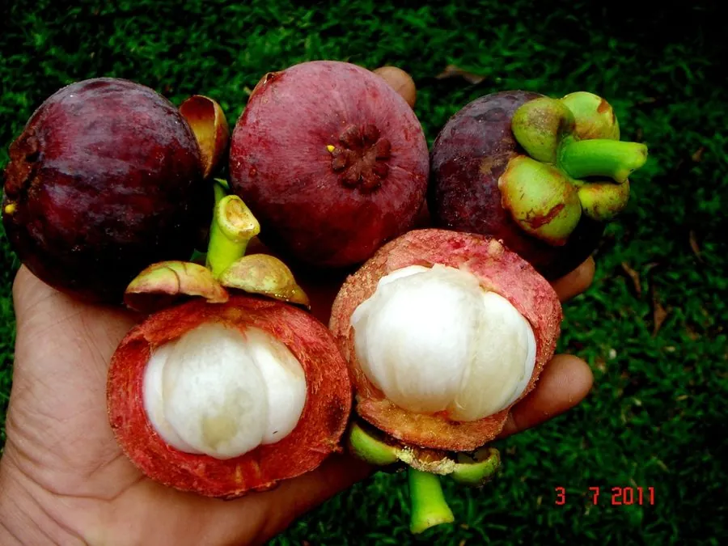

乔木 · 植物界
山竹 Garcinia mangostana

东南亚著名的热带水果，果皮紫红厚韧、果肉雪白如蒜瓣，清甜微酸、风味独特，与榴莲并称“水果皇后”。
- 分类
- 门被子植物门纲木兰纲目金虎尾目科藤黄科属藤黄属
- 栖息环境
- 热带雨林气候区，喜高温多湿和半阴环境，幼树需遮阴
- 地理分布
- 原产马来半岛与印度尼西亚，泰国、马来西亚、越南栽培最盛；中国海南、广东等地引种
- 保护级别
- 暂无评估；中国未列入国家重点保护野生植物名录
物种志
山竹为常绿乔木，高可达 12 m，树皮黑褐色，树冠圆锥形；叶片对生，长椭圆形，革质，深绿色有光泽。花期 9–10 月，花单生或成对生于枝顶，花大、肉质，花瓣 4 枚、淡红色；果实为浆果，球形，直径 5–8 cm，果皮厚韧、紫红色，内含 4–8 瓣白色果肉，果肉由假种皮发育而成，清甜微酸。
山竹原产马来半岛与印度尼西亚，泰国、马来西亚、越南栽培最盛，中国海南、广东、云南南部有引种。它喜高温多湿、半阴环境，幼树需遮阴，适宜深厚肥沃、排水良好的酸性土壤，从栽种到结果需 8–10 年。山竹果肉清甜、风味独特，与榴莲并称“水果皇后”；果皮含山竹素，可提取天然色素，也可入药；木材可制器具。山竹果实不耐贮运，需冷藏保存，是东南亚重要的出口水果。
形态与习性
- 株高可达 12 m，树冠圆锥形
- 花期9–10 月，花淡红色
- 果期11–12 月，果皮紫红色
- 光照喜半阴，幼树需遮阴
- 水分喜湿润，怕积水
- 土壤深厚肥沃的酸性壤土
- 主要用途鲜食水果、果皮提取色素与入药、木材制器具
趣味知识
- 山竹的果肉雪白如蒜瓣，果皮厚韧紫红，与榴莲并称“水果皇后”。
- 山竹从栽种到开花结果一般需要 8–10 年，生长缓慢。
- 山竹果皮含天然色素，可提取用作染料，也可入药。
- 山竹果实不耐贮运，采摘后需冷藏，是东南亚重要的出口水果。